Fusion 360 API 入门
梁晓冬
开发顾问
DevTech中国区经理
Autodesk开发技术支持部（DevTech）
左右方向键切换PPT，有些页面上下方向键切换子页面
内容
- Fusion 360 简介
- API 概览
- 程序结构
- 创建和调试
- API对象结构
- 一些基本对象
- 如何创建模型
- 插件和用户界面
三维设计的新需求
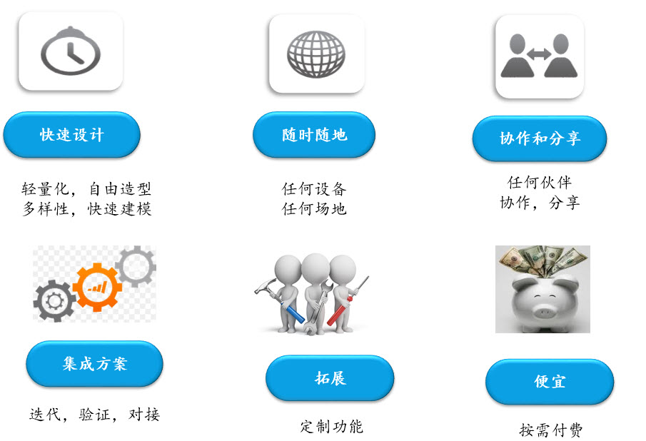
来看一个视频
注：广告都是浮云
Fusion 360
基于云，从概念设计到成品的三维CAD/CAM协作设计平台 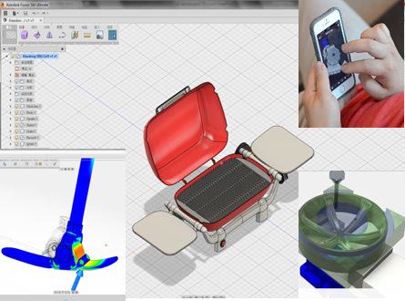
新时代的设计概念
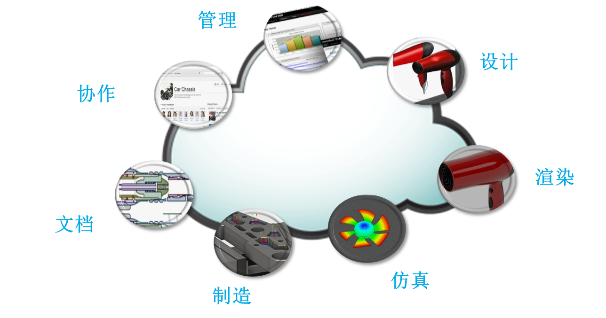
设计可以如此
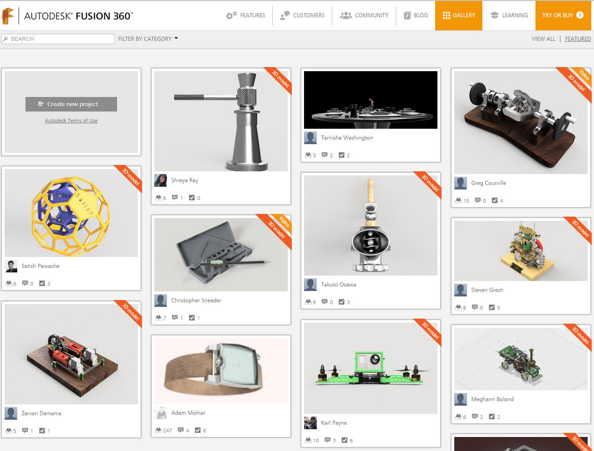
谁在用（Fusion 360客户故事）
- Modbot （机械手臂）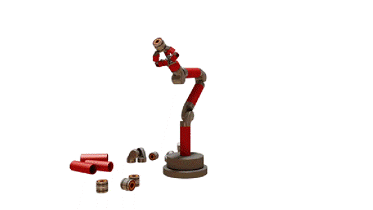
- Lumitoro （首饰设计）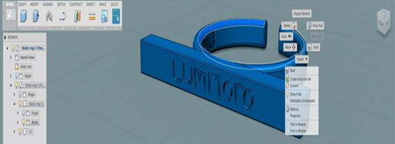
API拓展?
程序赏析
Fusion API - 目前是客户端的API
- 脚本
- 插件
API 演化过程
- 2014年9月引入Javascript 脚本形式
- 2014年11月引入Python脚本形式
- 2015年3月推出插件形式
- 2015年8月推出C++的方式
- 多编程语言的背后是单一的API
- 为每种编程语言包装了接口
在线帮助
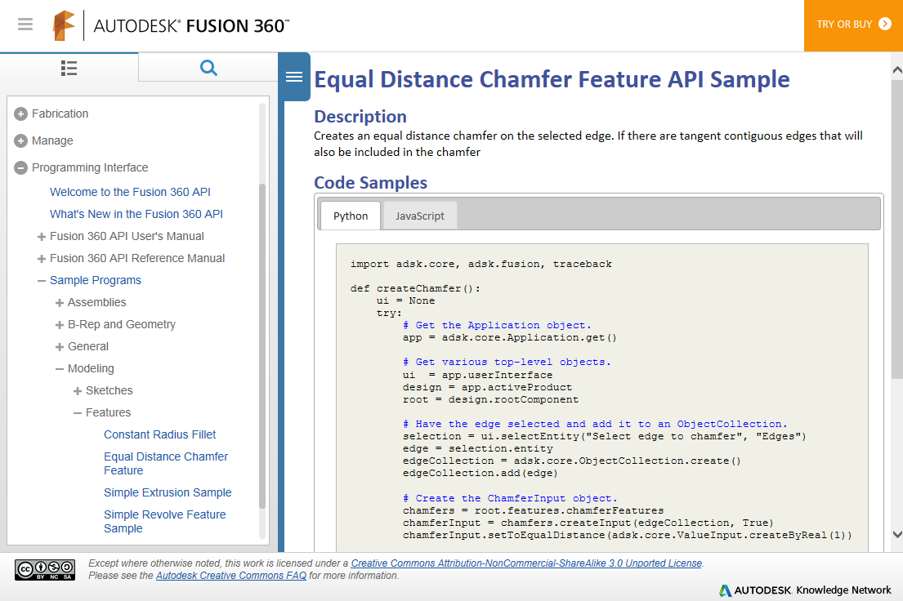脚本与插件管理器
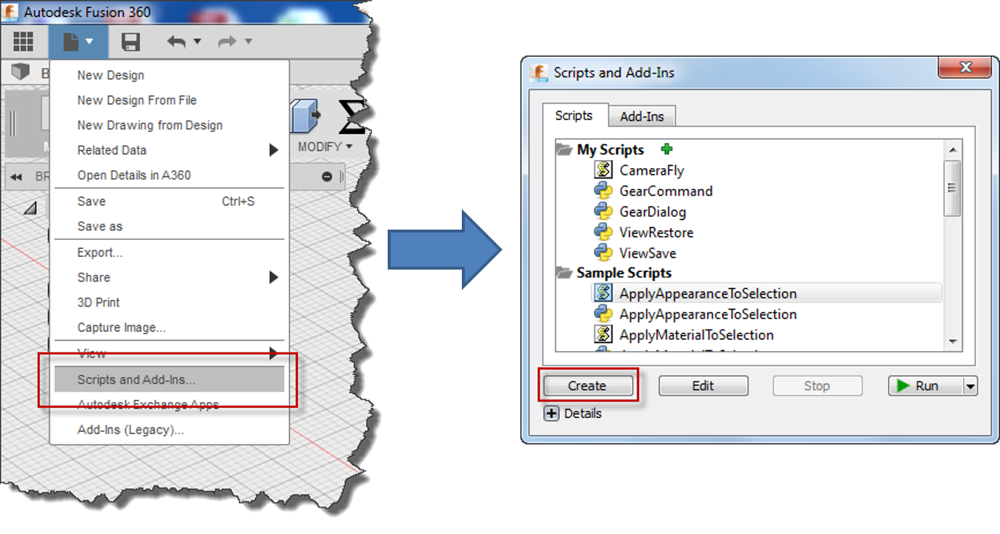创建脚本或插件
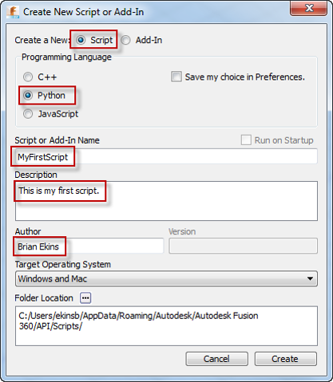脚本和插件
- 脚本类似于宏命令
- 插件一般是Fusion启动时就加载运行
- 插件用来创建用户界面，按钮等
- 插件需要额外的manifest文件做配置
- 需要特别独立的功能时可考虑插件
- 脚本方式可用manifest方式，也可不用
JavaScript文件结构
- *.html： 导引文件。引用相关Fusion的JS库，本程序的*.js和第三方库
- *.js: 执行API的代码
- *.manifest: 插件所需的清单文件 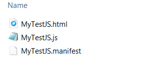
manifest文件 (Javascript)
{
"autodeskProduct": "Fusion360",
"type": "addin",
"id": "ea34afff-f444-4ac7-95e5-d9ac5c574b6e",
"author": "Autodesk Inc.",
"description": {
"": "This is sample addin."
},
"version": "0.0.1",
"runOnStartup": false,
"supportedOS": "windows|mac",
"autodeskLibraries": ["application", "dashboard", "geometry", "materials", "userInterface", "utilities", "bRep", "components", "construction", "features", "fusion", "meshBody", "meshData", "sketch", "tSpline"]
}
Python文件结构
- *.py :执行API的代码
- *.manifest: 插件所需的清单文件 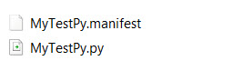
manifest文件 (Python)
{
"autodeskProduct": "Fusion360",
"type": "script",
"author": "",
"description": {
"": ""
},
"supportedOS": "windows|mac"
}
C++文件结构
- *.dll: 编译后的二进制文件
- *.manifest: 插件所需的清单文件
- 脚本和插件管理器创建还产生以下文件，最终部署时不需要
- *.vcxproj :Visual Studio的项目文件（Windows）
- *.xcodeproj: Xcode的项目文件（Mac）
- *.cpp :执行API的代码
manifest文件 (C++)
{
"autodeskProduct": "Fusion360",
"type": "script",
"author": "",
"description": {
"": ""
},
"supportedOS": "windows|mac",
"sourcewindows": "MyTestCPP.vcxproj",
"sourcemac": "MyTestCPP.xcodeproj"
}
Javascript代码编辑器（Bracket）
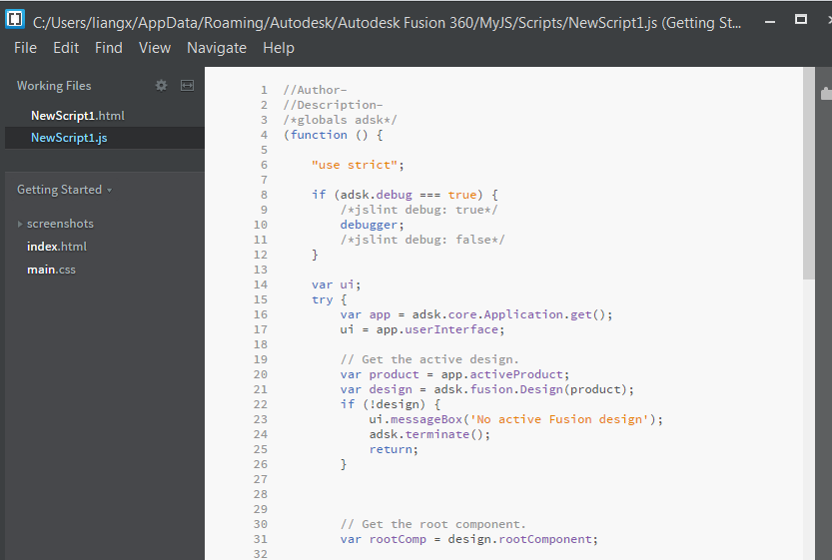Javascript调试器（Chrome）
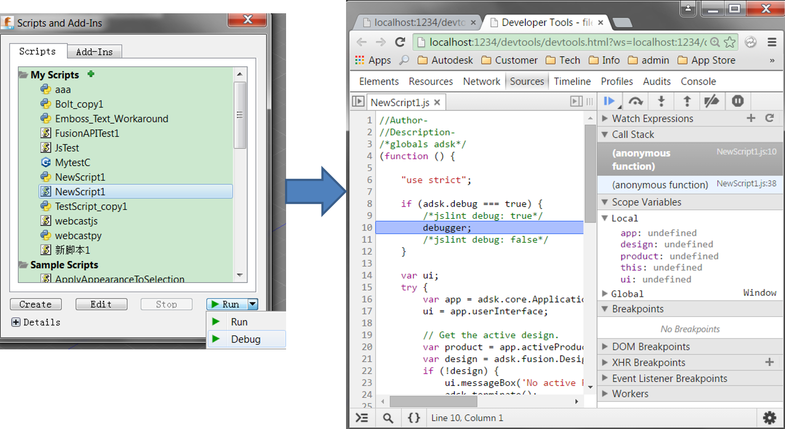Python代码编辑和调试器（Spyder）
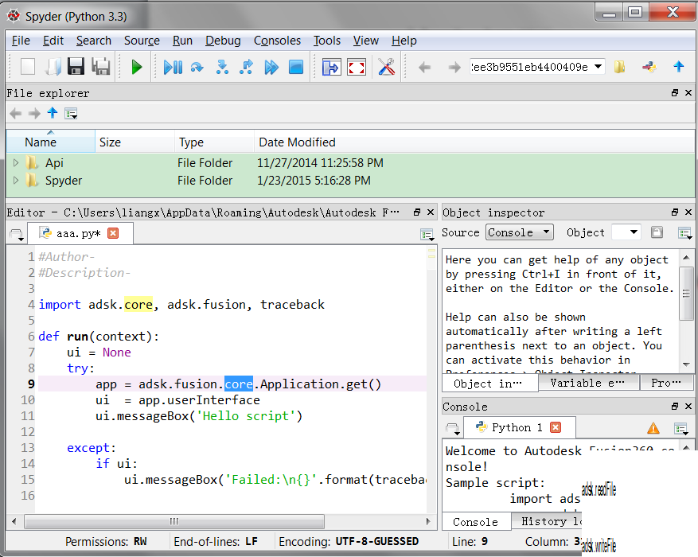C++代码编辑器（Visual Studio 或 XCode）
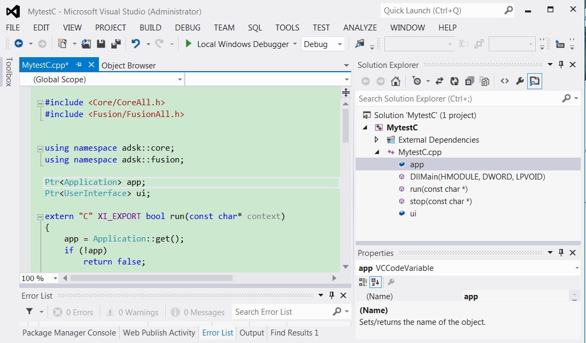C++代码调试器（Visual Studio 或 XCode）
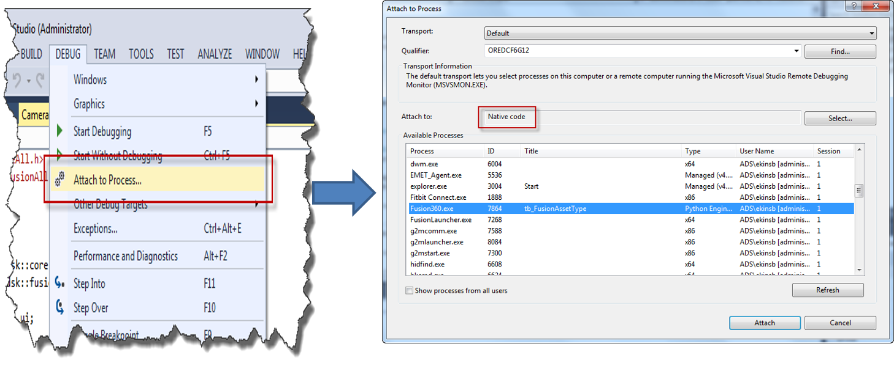- 特征和时间轴
- 草图, 构造特征
- 参数
- 材质,外观
- 基本的A360访问
- 装配结构, 约束
- BRep访问，三角网格
- 用户设置
- 相机相关功能
- 命令和用户菜单
未来功能
- 剩下还未支持的特征
- T-Splines
- 工程图
- 机加工（CAM）
- 更多...
API对象图
- 面向对象的层级结构
- API对象对应界面中的对象或功能
- 对象是包含关系，而非继承关系
- collection: 对象集合
- adsk：对象总接口
- adsk.core: 辅助对象
- adsk.Fusion: Fusion对象
- adsk.cAM: CAM对象
API对象图
JavaScript程序结构
//Fusion调用入口函数
function run(context) {
//是否支持调试
"use strict";
if (adsk.debug === true) {
/*jslint debug: true*/
debugger;
/*jslint debug: false*/
}
//用户界面相关的对象
var ui;
try {
//获取Application对象
var app = adsk.core.Application.get();
ui = app.userInterface;
ui.messageBox('Hello script');
}
catch (e) {
if (ui) {
ui.messageBox('Failed : ' + (e.description ? e.description : e));
}
}
adsk.terminate();
}
Python程序结构
#引入必要的基本库
import adsk.core, adsk.fusion, traceback
#Fusion调用入口函数
def run(context):
#用户界面相关的对象
ui = None
try:
#获取Application对象
app = adsk.core.Application.get()
ui = app.userInterface
ui.messageBox('Hello script')
except:
if ui:
ui.messageBox('Failed:\n{}'.format(traceback.format_exc()))
C++程序结构
//引入必要的基本库
#include < Core/CoreAll.h >
#include < Fusion/FusionAll.h>
//缺省两个命令空间。便于编程使用
using namespace adsk::core;
using namespace adsk::fusion;
Ptr app;
Ptr ui;
//外部函数，Fusion调用的入口
extern "C" XI_EXPORT bool run(const char* context)
{
//获取Application对象
app = Application::get();
if (!app)
return false;
//用户界面相关的对象
ui = app->userInterface();
if (!ui)
return false;
ui->messageBox("in run");
return true;
}
//外部函数，程序退出时
extern "C" XI_EXPORT bool stop(const char* context)
{
if (ui)
{
ui->messageBox("in stop");
ui = nullptr;
}
return true;
}
#ifdef XI_WIN
#include
//C++程序的执行入口
BOOL APIENTRY DllMain(HMODULE hmodule, DWORD reason, LPVOID reserved)
{
switch (reason)
{
case DLL_PROCESS_ATTACH:
case DLL_THREAD_ATTACH:
case DLL_THREAD_DETACH:
case DLL_PROCESS_DETACH:
break;
}
return TRUE;
}
#endif // XI_WIN
C++特定问题
- 自动生成Visual Studio (.vcxproj) 和Xcode (.xcodeproj)。需用对应编译器编译
- 定义对象用智能指针
Ptr< SketchLine > line1;
bool doAnimation(Ptr< SketchCurve > pathCurve, Ptr< Vector3D > upDirection)
if (comp->name() == "Test")
bool isOK = comp->name("New Test");
Components
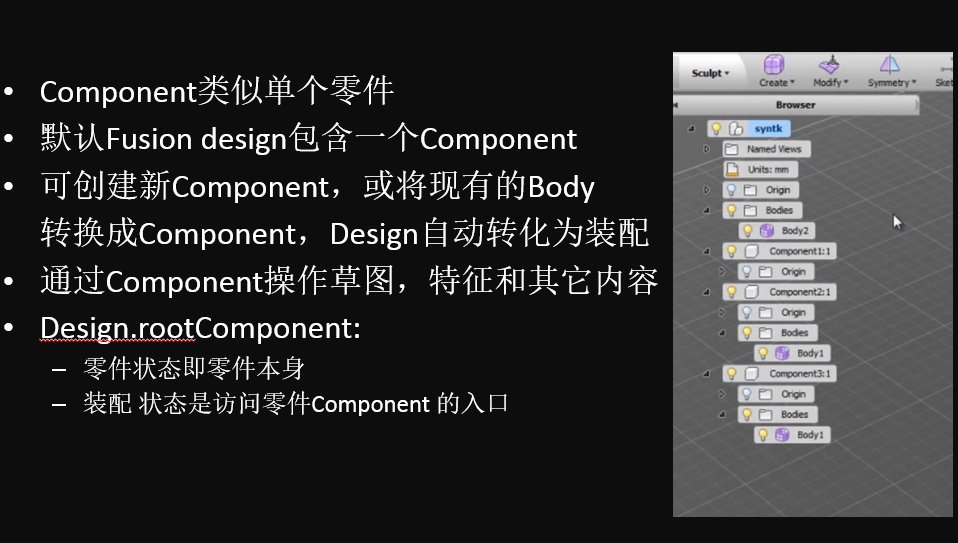Input对象
var prof = sketch.profiles.item(0);
var extrudes = rootComp.features.extrudeFeatures;
var extInput = extrudes.createInput(prof, adsk.fusion.FeatureOperations.NewBodyFeatureOperation);
var distance = adsk.core.ValueInput.createByReal(5);
extInput.setDistanceExtent(false, distance);
var ext = extrudes.add(extInput)
草图和特征
- 草图（Sketch）：常规实体创建的构造轮廓
- 轮廓（Profile）：参与模型构建的草图图元区域
- 特征（Feature）：最终看到的实体
创建拉伸特征（JavaScript）
//获取application
var app = adsk.core.Application.get();
ui = app.userInterface;
//当前设计
var product = app.activeProduct;
var design = adsk.fusion.Design(product);
// 获取当前设计的模型根对象rootComponent.
var rootComp = design.rootComponent;
//基于XZ平面创建草图
var sketches = rootComp.sketches;
var sketch = sketches.add(rootComp.xZConstructionPlane);
//绘制一个草图圆.
var sketchCircles = sketch.sketchCurves.sketchCircles;
var centerPoint = adsk.core.Point3D.create(0, 0, 0);
var circle = sketchCircles.addByCenterRadius(centerPoint, 5.0);
// 获取缺省的第一个轮廓（即这个草图圆区域）
var prof = sketch.profiles.item(0);
// 创建模型特征的Input对象
var extrudes = rootComp.features.extrudeFeatures;
var extInput = extrudes.createInput(prof, adsk.fusion.FeatureOperations.NewBodyFeatureOperation);
// 定义特征的拉伸距离
var distance = adsk.core.ValueInput.createByReal(5);
// Set the distance extent to be symmetric
extInput.setDistanceExtent(true, distance);
// 利用该Input对象创建拉伸特征
var ext = extrudes.add(extInput);
创建拉伸特征（Python）
app = adsk.core.Application.get()
design = app.activeProduct
# 获取当前设计的模型根对象rootComponent.
rootComp = design.rootComponent
# 基于XY平面创建草图.
sketch = rootComp.sketches.add(rootComp.xYConstructionPlane)
# 绘制一个草图圆.
circles = sketch.sketchCurves.sketchCircles
circle1 = circles.addByCenterRadius(adsk.core.Point3D.create(0, 0, 0), 2)
# 获取缺省的第一个轮廓（即这个草图圆区域）
prof = sketch.profiles.item(0)
#创建模型特征的Input对象
extrudes = rootComp.features.extrudeFeatures
extInput = extrudes.createInput(prof, adsk.fusion.FeatureOperations.NewComponentFeatureOperation)
# 定义特征的拉伸距离
extInput.setDistanceExtent(False, adsk.core.ValueInput.createByReal(5))
# 利用该Input对象创建拉伸特征
ext = extrudes.add(extInput)
Models
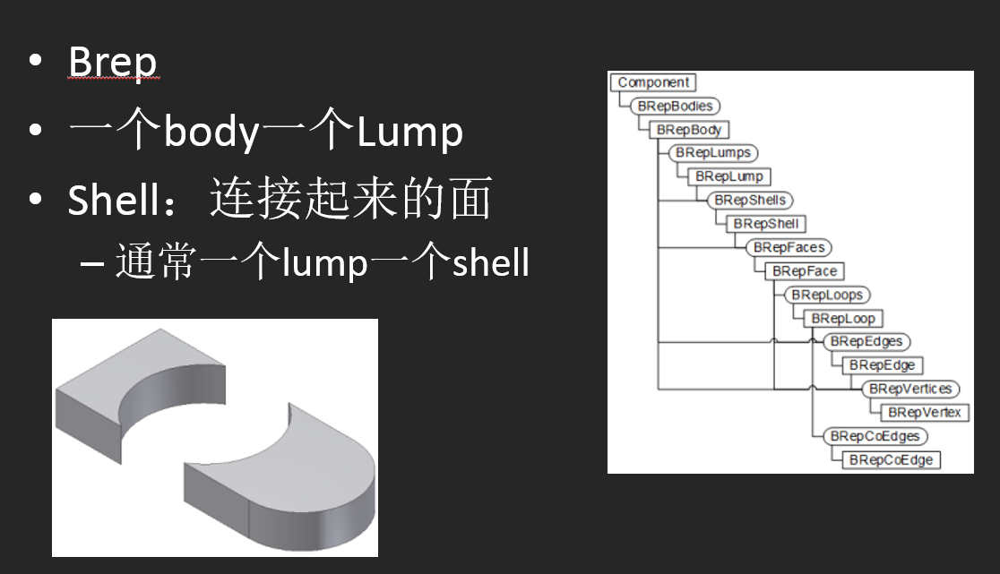选择集
- 用户选择实体的集合：application.userInterface.activeSelections
- 每个选择实体的API对象：Selection
- Selection：Selection
JavaScript对象类型与比较
var app = adsk.core.Application.get();
ui = app.userInterface;
var thisobj = ui.activeSelections.item(0).entity ;
var objName = thisobj.objectType;
ui.messageBox(objName);
if(thisobj instanceof adsk.fusion.BRepFace)
{
ui.messageBox("这是Face！");
}
else
{
ui.messageBox("这不是Face！");
}
if(ui.activeSelections.count>1)
{
var thisobj1 = ui.activeSelections.item(0).entity;
var thisobj2 = ui.activeSelections.item(1).entity;
if(thisobj.equals(thisobj1)){
ui.messageBox("两对象相等！");
}
else{
ui.messageBox("两对象不相等！");
}
}
Pythont对象类型与比较
app = adsk.core.Application.get()
ui = app.userInterface
thisobj= ui.activeSelections.item(0).entity
objName = type(thisobj).__name__
if type(thisobj) is adsk.fusion.BRepFace:
ui.messageBox('这是Face！')
else:
ui.messageBox('这不是Face！')
if ui.activeSelections.count > 1:
thisobj1= ui.activeSelections.item(0).entity
thisobj2= ui.activeSelections.item(1).entity
if thisobj == thisobj1:
ui.messageBox('两对象相等')
else:
ui.messageBox('两对象不相等')
C++对象类型与比较
Ptr练习
选择某平面，基于平面创建草图，绘制矩形，根据此轮廓，创建一定长度的拉伸特征
插件基本结构(JavaScript)
function run(context) {
"use strict";
if (adsk.debug === true) {
/*jslint debug: true*/
debugger;
/*jslint debug: false*/
}
var ui;
try {
var app = adsk.core.Application.get();
ui = app.userInterface;
ui.messageBox('Hello addin');
}
catch (e) {
if (ui) {
ui.messageBox('Failed : ' + (e.description ? e.description : e));
}
}
}
function stop(context) {
var ui;
try {
var app = adsk.core.Application.get();
ui = app.userInterface;
ui.messageBox('Stop addin');
}
catch (e) {
if (ui) {
ui.messageBox('Failed : ' + (e.description ? e.description : e));
}
}
}
插件基本结构(Python)
def run(context):
ui = None
try:
app = adsk.core.Application.get()
ui = app.userInterface
ui.messageBox('Hello addin')
except:
if ui:
ui.messageBox('Failed:\n{}'.format(traceback.format_exc()))
def stop(context):
ui = None
try:
app = adsk.core.Application.get()
ui = app.userInterface
ui.messageBox('Stop addin')
except:
if ui:
ui.messageBox('Failed:\n{}'.format(traceback.format_exc()))
插件基本结构(C++)
#include
#include
using namespace adsk::core;
using namespace adsk::fusion;
Ptr app;
Ptr ui;
extern "C" XI_EXPORT bool run(const char* context)
{
app = Application::get();
if (!app)
return false;
ui = app->userInterface();
if (!ui)
return false;
ui->messageBox("in run");
return true;
}
extern "C" XI_EXPORT bool stop(const char* context)
{
if (ui)
{
ui->messageBox("in stop");
ui = nullptr;
}
return true;
}
#ifdef XI_WIN
#include
BOOL APIENTRY DllMain(HMODULE hmodule, DWORD reason, LPVOID reserved)
{
switch (reason)
{
case DLL_PROCESS_ATTACH:
case DLL_THREAD_ATTACH:
case DLL_THREAD_DETACH:
case DLL_PROCESS_DETACH:
break;
}
return TRUE;
}
#endif // XI_WIN
事件
- 定义事件函数
- 添加函数指针到对应事件
事件(JavaScript)
//定义事件函数
var MyWorkspaceActivatedHandler = function(args) {
var ws = args.workspace;
var app = adsk.core.Application.get();
var ui = app.userInterface;
ui.messageBox(ws.name + ' workspace was activated (JavaScript).');
};
//添加函数指针到对应事件
function run(context) {
var app = adsk.core.Application.get();
var ui = app.userInterface;
ui.workspaceActivated.add(MyWorkspaceActivatedHandler);
ui.messageBox('Event connected.');
}
}
事件(Python)
事件(C++)
命令和用户界面
- 命令
- Definition: 定义Command名，事件，图标…
- userInterface.commandDefinitions: definition 集合
- 各种类型按钮添加方法，例如commandDefinitions.addButtonDefinition
- 定义命令执行事件
- Controls: 关联Definition的UI界面
- userInterface.workspaces: Model, Render, CAM...
- workspace.toolbarPanels: workspace下的所有面板
- panel.controls: 面板下的命令
- controls.addCommand: 将definition添加到该面板
命令和用户界面(Python)
import adsk.core, adsk.fusion, traceback
app = None
ui = None
handlers_dialog = []
commandDefId = 'ADNTestCommandDef'
commandName = 'My Test'
commandDescription = 'test'
workspaceToUse = "FusionSolidEnvironment"
panelToUse = "SolidCreatePanel"
#执行按钮的事件
class CommandCreatedHandler(adsk.core.CommandCreatedEventHandler):
def __init__(self):
super().__init__()
def notify(self, args):
global ui
ui.messageBox('我的按钮执行了！')
#插件启动时自动调用的入口
#初始化自定义界面，增加自定义按钮
def run(context):
try:
global app
app = adsk.core.Application.get()
global ui
ui = app.userInterface
#添加命令的definition
cmdDef = ui.commandDefinitions.itemById(commandDefId)
if not cmdDef:
cmdDef = ui.commandDefinitions.addButtonDefinition(commandDefId, commandName, commandDescription, '/')
#委托按钮的执行事件
onCommandCreated = CommandCreatedHandler()
cmdDef.commandCreated.add(onCommandCreated)
#获得【模型】工作空间
workspaces_ = ui.workspaces
modelingWorkspace_ = workspaces_.itemById(workspaceToUse)
# 获得【创建】的面板
toolbarPanels_ = modelingWorkspace_.toolbarPanels
toolbarPanel_ = toolbarPanels_.itemById(panelToUse)
#添加新按钮到面板按钮集合
toolbarControlsPanel_ = toolbarPanel_.controls
toolbarControlPanel_ = toolbarControlsPanel_.itemById(commandDefId)
if not toolbarControlPanel_:
toolbarControlPanel_ = toolbarControlsPanel_.addCommand(cmdDef, commandDefId)
#附加到全局句柄
handlers_dialog.append(onCommandCreated)
except:
if ui:
ui.messageBox('Failed:\n{}'.format(traceback.format_exc()))
#插件卸载时自动调用
#销毁自定义界面，释放其它对象
def stop(context):
ui = None
try:
app = adsk.core.Application.get()
ui = app.userInterface
#删除按钮
workspaces_ = ui.workspaces
modelingWorkspace_ = workspaces_.itemById(workspaceToUse)
toolbarPanels_ = modelingWorkspace_.toolbarPanels
toolbarPanel_ = toolbarPanels_.itemById(panelToUse)
toolbarControls_ = toolbarPanel_.controls
toolbarControl_ = toolbarControls_.itemById(commandDefId)
if toolbarControl_.isValid:
toolbarControl_.deleteMe()
commandDefinitions_ = ui.commandDefinitions
commandDefinition_ = commandDefinitions_.itemById(commandDefId)
if commandDefinition_.isValid:
commandDefinition_.deleteMe()
except:
if ui:
ui.messageBox('Failed:\n{}'.format(traceback.format_exc()))
命令和用户界面(JavaScript)
//Author-
//Description-
var commandId = 'ADNTestJSCommandDef';
var commandName = 'My Javascript Test';
var commandDescription = 'test';
var workspaceToUse = 'FusionSolidEnvironment';
var panelToUse = 'SolidCreatePanel';
var commandResources = './';
//插件启动时自动调用的入口
//初始化自定义界面，增加自定义按钮
function run(context) {
//是否支持调试
"use strict";
if (adsk.debug === true) {
/*jslint debug: true*/
debugger;
/*jslint debug: false*/
}
var ui;
try {
var app = adsk.core.Application.get();
ui = app.userInterface;
//创建按钮命令
var onCommandCreated = function(args) {
try {
// 委托按钮执行事件.
var command = args.command;
command.execute.add(onCommandExecuted);
}
catch (e) {
ui.messageBox('创建命令失败 : ' + errorDescription(e));
}
};
// 按钮执行事件
var onCommandExecuted = function(args) {
try {
ui.messageBox("Javascript创建的按钮被执行！");
}
catch (e) {
ui.messageBox('执行按钮失败！ : ' + errorDescription(e));
}
};
// 添加按钮
var workspaces_ = ui.workspaces;
//【模型】工作空间
var modelingWorkspace_ = workspaces_.itemById('FusionSolidEnvironment');
var toolbarPanels_ = modelingWorkspace_.toolbarPanels;
//工作空间某面板
var toolbarPanel_ = toolbarPanels_.itemById(panelToUse)
var toolbarControls_ = toolbarPanel_.controls;
var toolbarControl_ = toolbarControls_.itemById(commandId);
if (toolbarControl_) {
//若已经创建
adsk.terminate();
return;
} else {
//命令定义
var commandDefinition_ = ui.commandDefinitions.itemById(commandId);
if (!commandDefinition_) {
commandDefinition_ = ui.commandDefinitions.addButtonDefinition(commandId, commandName, commandDescription, commandResources);
}
//委托命令创建事件
commandDefinition_.commandCreated.add(onCommandCreated);
//添加定义到面板
toolbarControl_ = toolbarControls_.addCommand(commandDefinition_);
toolbarControl_.isVisible = true;
}
}
catch (e) {
if (ui) {
ui.messageBox('Failed : ' + (e.description ? e.description : e));
}
}
}
//插件卸载时自动调用
//销毁自定义界面，释放其它对象
function stop(context) {
var ui;
try {
var app = adsk.core.Application.get();
ui = app.userInterface;
//删除按钮
var workspaces_ = ui.workspaces;
var modelingWorkspace_ = workspaces_.itemById('FusionSolidEnvironment');
var toolbarPanels_ = modelingWorkspace_.toolbarPanels;
var toolbarPanel_ = toolbarPanels_.itemById(panelToUse)
var toolbarControls_ = toolbarPanel_.controls;
var toolbarControl_ = toolbarControls_.itemById(commandId);
if (toolbarControl_.isValid) {
toolbarControl_.deleteMe();
}
//删除命令定义
var commandDefinitions_ = ui.commandDefinitions;
var commandDefinition_ = commandDefinitions_.itemById(commandId);
if (commandDefinition_.isValid) {
commandDefinition_.deleteMe();
}
}
catch (e) {
if (ui) {
ui.messageBox('Failed : ' + (e.description ? e.description : e));
}
}
}
命令和用户界面(C++)
用户界面
- Definition: 定义Command名，事件，图标…
- Controls: 关联Definition的UI界面
发布Fusion 360程序，拿500刀！
500刀！！！
Javascript
- 不能使用额外的HTML界面
- 无法访问本地文件系统
- 可用任何编辑器编写，或使用Fusion内置的Bracket
- 借用Chrome或Webkit进行调试
- 进程外运行
- 可加载第三方JS库（和HTML界面相关的除外）
Python
- 运行于Fusion进程内
- 比JS要快
- 可访问本地文件系统
- 可用任何编辑器编写，或使用Fusion内置的Spyder
- 用Spyder调试
- 可加载第三方Python库
Fusion命令
- 脚本和插件都可以用
- Fusion自己大部分功能也都是命令的方式
- 命令一般对应一个按钮，而按钮背后是一个'定义'，规定执行按钮的相关行为
- 按钮执行时，命令创建启动
- 可弹出参数输入对话框，用来得到命令需要的数据
- 可预览参数产生的效果
- 自动支持事务，可回滚
参考资料
Autodesk ADN 微信公众号
我的博客